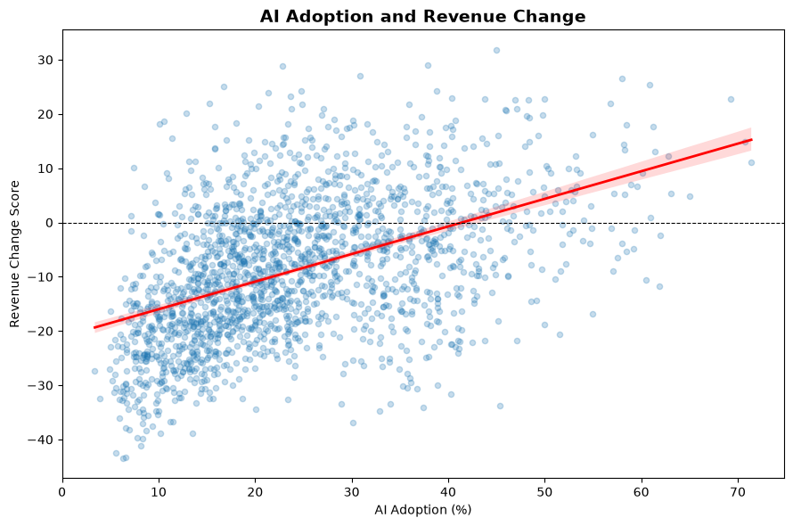
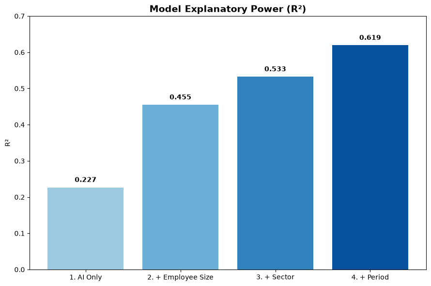
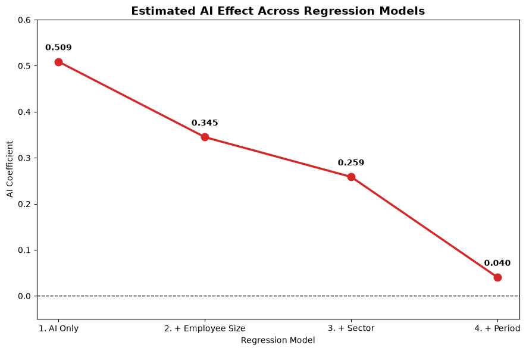
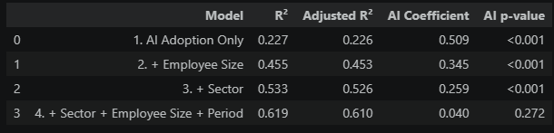
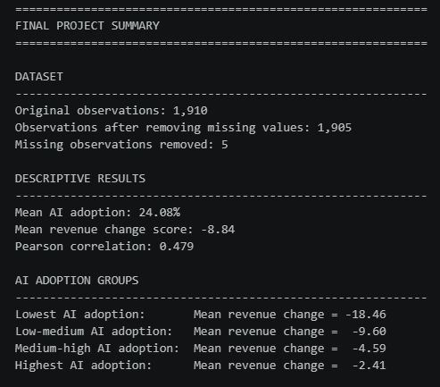

STATISTICAL ANALYSIS
AI Adoption & Business Revenue Change
Does greater AI adoption correspond with changes in business revenue, and does that relationship remain after accounting for employee size, industry sector, and time period?
01 — PROJECT OVERVIEW
Research Question
AI adoption is often discussed as a potential driver of productivity, efficiency, and business performance. This project examines whether businesses reporting higher levels of AI adoption also show greater revenue change.
Rather than relying only on a simple correlation, I progressively expanded the regression model to determine whether the relationship between AI adoption and revenue change remains after accounting for other characteristics of the businesses in the dataset.
Five observations were removed during data preparation because of missing values, leaving 1,905 observations for the regression analysis.
02 — DATA & METHOD
From Simple Relationship to Full Model
Key Variables
The analysis focuses on AI adoption as the primary explanatory variable and revenue change as the outcome variable.
Employee size, sector, and time period were added as control variables to determine whether the observed relationship between AI adoption and revenue change remained after accounting for differences across businesses.
Analytical Approach
I estimated four progressively more complete ordinary least squares regression models. This makes it possible to see how the estimated AI coefficient changes as additional controls are introduced.
The final model was also evaluated using clustered standard errors to account for potential correlation within sector and employee-size groups.
AI Adoption Only
Establishes the basic relationship between AI adoption and revenue change without additional controls.
+ Employee Size
Controls for differences in business size.
+ Sector
Adds sector controls to account for differences across industries.
Full Model
Controls for employee size, sector, and time period.
03 — VISUAL ANALYSIS
The Relationship Before Controls
AI Adoption vs. Revenue Change

The simple regression shows a positive relationship between AI adoption and revenue change. Businesses with higher AI adoption tend to have higher revenue-change scores in the unadjusted relationship.
The Model 1 AI coefficient is 0.509 and is statistically significant at p < 0.001. However, this model does not account for differences in business size, sector, or time period.
04 — MODEL COMPARISON
What Happens When Controls Are Added?
Model Fit: R² Across Four Models

Model fit improves substantially as additional variables are introduced. R² increases from 0.227 in the AI-only model to 0.619 in the full model.
In other words, the full model explains approximately 61.9% of the variation in revenue change in the sample, compared with 22.7% for the model using AI adoption alone.
AI Coefficient Across Models

The most important pattern appears in the AI coefficient. The estimated relationship declines from 0.509 in Model 1 to 0.345 after controlling for employee size, then to 0.259 after adding sector controls.
After adding employee size, sector, and period controls, the coefficient falls to 0.040.
This large reduction suggests that much of the positive relationship observed in the simpler models is associated with differences captured by the additional control variables.
05 — FINAL MODEL
Final Regression Results
Regression Summary

The final model includes AI adoption, employee size, sector, and time period. The estimated AI coefficient is 0.0404.
The conventional OLS p-value is 0.2722, while the clustered standard-error p-value is 0.3566. Both results are above conventional statistical significance thresholds.
After controlling for employee size, sector, and time period, the analysis does not provide statistically significant evidence of an independent relationship between AI adoption and revenue change.
Final Summary Output

06 — INTERPRETATION
What the Analysis Suggests
What We See
The descriptive and simpler regression results show a clear positive relationship between AI adoption and revenue change. Businesses with greater AI adoption tend to have higher revenue-change scores in the unadjusted analysis.
What Changes
The estimated AI relationship becomes substantially smaller as employee size, sector, and period are introduced into the model. In the full model, the coefficient is small and not statistically significant.
The key finding is therefore not that AI adoption has no relationship with business performance. Instead, the results show that the positive relationship observed in the simpler models is not robust to the additional controls included in this analysis.
07 — CONCLUSION
Conclusion
AI adoption is positively associated with revenue change in the simpler models, but the relationship becomes small and statistically insignificant after accounting for employee size, sector, and time.
The final model explains approximately 61.9% of the variation in revenue change. However, the AI coefficient of 0.040 is not statistically significant, with a clustered p-value of 0.357.
Therefore, this analysis does not provide sufficient evidence to conclude that AI adoption independently explains changes in revenue after accounting for the other factors included in the model.
What This Analysis Does Not Establish
This analysis does not establish that AI adoption causes revenue to increase or decrease. Regression results from observational data can identify statistical relationships, but they do not by themselves establish causation.
The findings should therefore be interpreted as evidence about the relationship observed in this dataset rather than as proof of a causal effect of AI adoption on business revenue.
08 — LIMITATIONS & REFLECTION
Limitations & Reflection
Sample
The analysis is based on the available observations after removing five records with missing values. The results therefore reflect the businesses and periods represented in the dataset.
Model Controls
The final model controls for employee size, sector, and period, but other factors may influence revenue change. The results should not be interpreted as accounting for every possible business characteristic.
Causality
The analysis identifies associations rather than causal effects. A positive relationship between AI adoption and revenue change in a simple model does not demonstrate that AI adoption caused the observed revenue changes.
One of the most important lessons from this project was how much the interpretation changed as the model became more complete. The initial relationship between AI adoption and revenue change appeared strong, but that relationship became much smaller once other characteristics of the businesses were considered.
This demonstrates why relying on a single correlation or simple regression can be misleading when analyzing real-world business data. Adding relevant controls can substantially change both the estimated relationship and the conclusion.
09 — CODE & TRANSPARENCY
Code & Transparency
The complete Python analysis used to clean the data, conduct the descriptive analysis, estimate the regression models, evaluate statistical significance, and create the visualizations is available through the project repository.
The project uses Python and statistical analysis libraries to move from data preparation through model estimation and visualization. The analysis includes ordinary least squares regression as well as robust and clustered standard-error approaches for the final model.
AI Usage Disclosure
Generative AI Disclosure: I used OpenAI ChatGPT as a support tool during this project to help troubleshoot Python errors, explain statistical concepts, assist with code development, and improve the clarity and organization of the project presentation. I independently selected the research question, evaluated the dataset, made analytical decisions, executed and reviewed the Python analysis, evaluated the resulting visualizations, and determined the final conclusions.
10 — SOURCES
Data Sources
U.S. Census Bureau. (n.d.). Business trends and outlook survey (BTOS): Data downloads. https://www.census.gov/hfp/btos/data_downloads